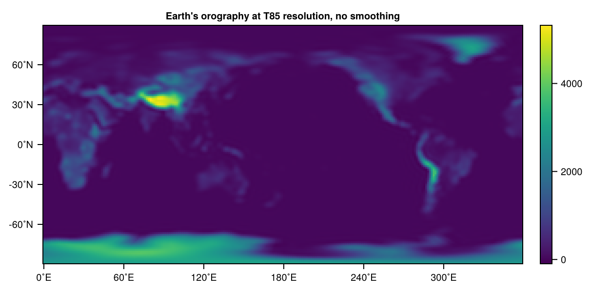
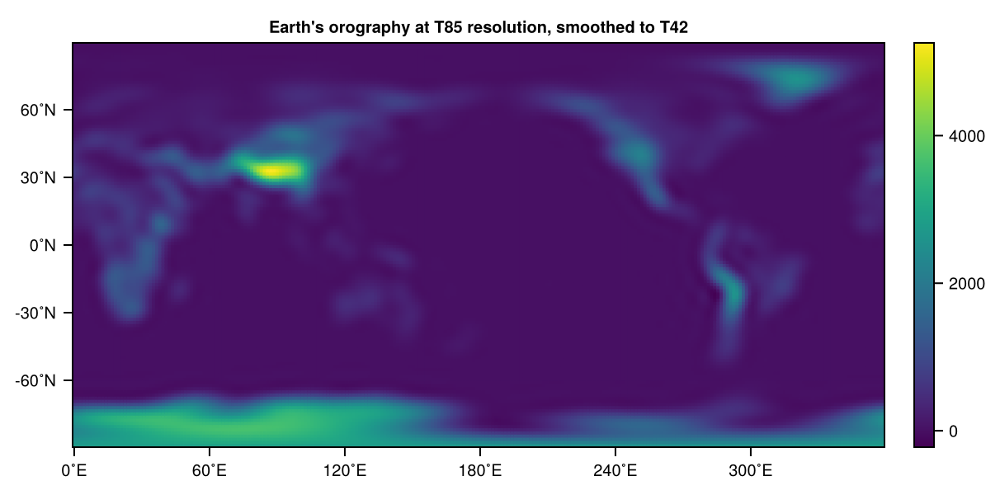
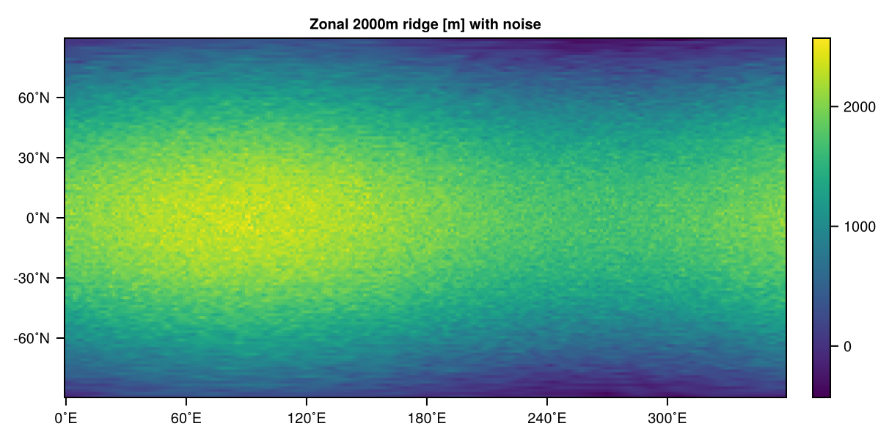
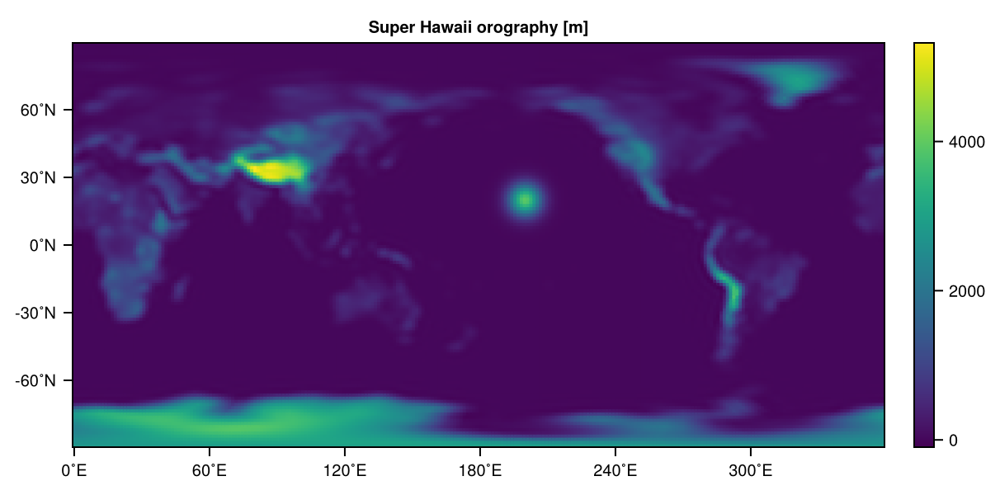
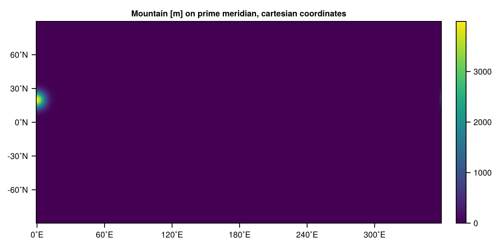
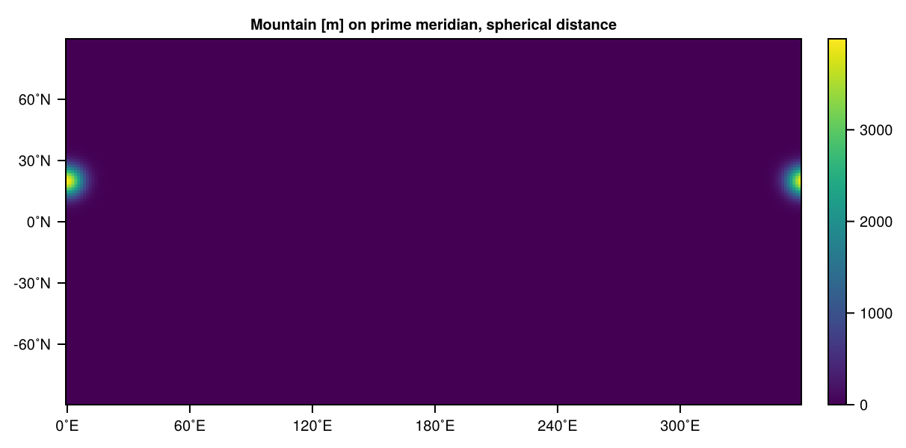

Orography
Orography (in height above the surface) forms the surface boundary of the lowermost layer in SpeedyWeather.
In the shallow-water equations the orography $H_b$ enters the equations when computing the layer thickness $h = \eta + H_0 - H_b$ for the volume fluxes $\mathbf{u}h$ in the continuity equation. Here, the orography is used in meters above the surface which shortens $h$ over mountains. The orography here is needed in grid-point space.
In the primitive equations the orography enters the equations when computing the Geopotential. So actually required here is the surface geopotential $\Phi_s = gz_s$ where $z_s$ is the orography height in meters as used in the shallow-water equations too $z_s = H_b$. However, the primitive equations require the orography in spectral space as the geopotential calculation is a linear operation in the horizontal and can therefore be applied in either grid-point or spectral space. The latter is more convenient as SpeedyWeather solves the equations to avoid additional transforms.
In the current formulation of the barotropic vorticity equations there is no orography. In fact, the field model.orography is not defined for model::BarotropicModel.
Orographies implemented
Currently implemented are
using SpeedyWeather
subtypes(SpeedyWeather.AbstractOrography)3-element Vector{Any}:
EarthOrography
NoOrography
ZonalRidgewhich are
- $\Phi_s = z_s = H_b = 0$ for
NoOrography - For
ZonalRidgethe zonal ridge from the Jablonowski and Williamson initial conditions, see Jablonowski-Williamson baroclinic wave - For
EarthOrographya high-resolution orography is loaded and interpolated to the resolution as defined byspectral_grid.
all orographies need to be created with spectral_grid::SpectralGrid as the first argument, so that the respective fields for geopot_surf, i.e. $\Phi_s$ and orography, i.e. $H_b$ can be allocated in the right size and number format.
Earth's orography
Earth's orography can be created with (here we use a resolution of T85, about 165km globally)
using SpeedyWeather
spectral_grid = SpectralGrid(trunc=85)
orography = EarthOrography(spectral_grid)EarthOrography{Float32, OctahedralGaussianGrid{Float32}, LowerTriangularMatrix{ComplexF32, Vector{ComplexF32}, Spectrum{SpeedyWeather.LowerTriangularArrays.CPU, Vector{UnitRange{Int64}}, Vector{Int64}, Vector{Int64}}}} <: SpeedyWeather.AbstractOrography
├ path::String = SpeedyWeather.jl/input_data
├ file::String = orography.nc
├ file_Grid::UnionAll = FullGaussianGrid
├ scale::Float32 = 1.0
├ smoothing::Bool = true
├ smoothing_power::Float32 = 1.0
├ smoothing_strength::Float32 = 0.1
├ smoothing_fraction::Float32 = 0.05
└── arrays: orography, geopot_surfbut note that only allocates the orography, it does not actually load and interpolate the orography which happens at the initialize! step. Visualised with
model = PrimitiveDryModel(spectral_grid; orography)
initialize!(orography, model) # happens also in simulation = initialize!(model)
using CairoMakie
heatmap(orography.orography, title="Earth's orography at T85 resolution, no smoothing")
typing ?EarthOrography shows the various options that are provided. An orogaphy at T85 resolution that is as smooth as it would be at T42 (controlled by the smoothing_fraction, the fraction of highest wavenumbers which are the top half here, about T43 to T85) for example can be created with
orography = EarthOrography(spectral_grid, smoothing=true, smoothing_fraction=0.5)
initialize!(orography, model)
heatmap(orography.orography, title="Earth's orography at T85 resolution, smoothed to T42")
Load orography from file
The easiest to load another orography from a netCDF file is to reuse the EarthOrography, e.g.
mars_orography = EarthOrography(spectal_grid,
path="path/to/my/orography",
file="mars_orography.nc",
file_Grid=FullClenshawGrid)the orography itself need to come on one of the full grids SpeedyWeather defines, i.e. FullGaussianGrid or FullClenshawGrid (a regular lat-lon grid, see FullClenshawGrid), which you can specify. Best to inspect the correct orientation with heatmap(mars_orography.orography) (after using CairoMakie; the scope mars_orography. is whatever name you chose here). You can use smoothing as above.
Changing orography manually
You can also change orography manually, that means by mutating the elements in either orography.orography (to set it for the shallow-water model) or orography.geopot_surf (for the primitive equations, but this is in spectral space, advanced!). This should be done after the orography has been initialised which will overwrite these arrays (again). You can just initialize orography with initialize!(orography, model) but that also automatically happens in simulation = initialize!(model). Orography is just stored as an array, so you can do things like sort!(orography.orography) (sorting all mountains towards the south pole). But for most practical purposes, the set! function is more convenient, for example you can do
set!(model, orography=(λ,φ) -> 2000*cosd(φ) + 300*sind(λ) + 100*randn())
using CairoMakie
heatmap(model.orography.orography, title="Zonal 2000m ridge [m] with noise")
passing on a function with arguments longitude (0 to 360˚E in that unit, so use cosd, sind etc.) and latitude (-90 to 90˚N). But note that while model.orography is still of type EarthOrography we have now muted the arrays within - so do not be confused that it is not the Earth's orography anymore.
The set! function automatically propagates the grid array in orography.orography to spectral space in orography.geopot_surf to synchronize those two arrays that are supposed to hold essentially the same information just one in grid the other in spectral space. set! also allows for the add keyword, making it possible to add (or remove) mountains, e.g. imagine Hawaii would suddenly increase massively in size, covering a 5˚x5˚ area with a 4000m "peak" (given that horizontal extent it is probably more a mountain range...)
model.orography = EarthOrography(spectral_grid) # reset orography
initialize!(model.orography, model) # initially that reset orography
# blow up Hawaii by adding a 4000m peak on a 10˚x10˚ large island
H, λ₀, φ₀, σ = 4000, 200, 20, 5 # height, lon, lat position, and width
set!(model, orography=(λ,φ) -> H*exp((-(λ-λ₀)^2 - (φ-φ₀)^2)/2σ^2), add=true)
heatmap(model.orography.orography, title="Super Hawaii orography [m]")
If you don't use set!, you want to reflect any changes to orography.orography in the surface geopotential orography.geopot_surf (which is used in the primitive equations) manually by
transform!(orography.geopot_surf, orography.orography, model.spectral_transform)
orography.geopot_surf .*= model.planet.gravity
spectral_truncation!(orography.geopot_surf)In the first line, the surface geopotential is still missing the gravity, which is multiplied in the second line. The spectral_truncation! removes the $l_{max}+1$ degree of the spherical harmonics as illustrated in the spectral representation or the surface geopotential here. This is because scalar fields do not use that last degree, see One more degree for spectral fields.
Spherical distance
In the example above we have defined the "Super Hawaii orography" as
orography=(λ,φ) -> H*exp((-(λ-λ₀)^2 - (φ-φ₀)^2)/2σ^2)note however, that this approximates the distance on the sphere with Cartesian coordinates which is here not too bad as we are not too far north (where longitudinal distances would become considerably shorter) and also as we are far away from the prime meridian. If $\lambda_0 = 0$ in the example above then calculating $\lambda - \lambda_0$ for $\lambda = 359˚E$ yields a really far distance even though $\lambda$ is actually relatively close to the prime meridian. To avoid this problem, SpeedyWeather (actually RingGrids) defines a function called spherical_distance (inputs in degrees, output in meters) to actually calculate the great-circle distance or spherical distance. Compare
λ₀ = 0 # move "Super Hawaii" mountain onto the prime meridian
set!(model, orography=(λ,φ) -> H*exp((-(λ-λ₀)^2 - (φ-φ₀)^2)/2σ^2))
heatmap(model.orography.orography, title="Mountain [m] on prime meridian, cartesian coordinates")
which clearly shows that the mountain is only on the Eastern hemisphere – probably not what you wanted. Note also that because we did not provide add=true the orography we set through set! overwrites the previous orography (add=false is the default). Rewrite this as
λ₀ = 0 # move "Super Hawaii" mountain onto the prime meridian
set!(model, orography=(λ,φ) -> H*exp(-spherical_distance((λ,φ), (λ₀,φ₀), radius=360/2π)^2/2σ^2))
heatmap(model.orography.orography, title="Mountain [m] on prime meridian, spherical distance")
And the mountain also shows up on the western hemisphere! Note that we could have defined the width $\sigma$ of the mountain in meters, or we keep using degrees as before but then use radius = 360/2π to convert radians into degrees. If you set radius=1 then radians are returned and so we could have defined $\sigma$ in terms of radians too.
Defining a new orography type
You can also define a new orography like we defined ZonalRidge or EarthOrography. The following explains what's necessary for this. The new MyOrography has to be defined as (mutable or not, but always with @kwdef)
@kwdef struct MyOrography{NF, GridVariable2D, SpectralVariable2D} <: SpeedyWeather.AbstractOrography
# optional, any parameters as fields here, e.g.
constant_height::NF = 100
# add some other parameters with default values
# mandatory, every <:AbstractOrography needs those (same name, same type)
orography::GridVariable2D # in grid-point space [m]
geopot_surf::SpectralVariable2D # in spectral space *gravity [m^2/s^2]
end
# constructor
function MyOrography(spectral_grid::SpectralGrid; kwargs...)
(; NF, GridVariable2D, SpectralVariable2D, nlat_half, trunc) = spectral_grid
orography = zeros(GridVariable2D, nlat_half)
geopot_surf = zeros(SpectralVariable2D, trunc+2, trunc+1)
return MyOrography{NF, GridVariable2D, SpectralVariable2D}(;
orography, geopot_surf, kwargs...)
endMain.MyOrographyfor convenience with a generator function is automatically defined for all AbstractOrography
my_orography = MyOrography(spectral_grid, constant_height=200)Main.MyOrography{Float32, OctahedralGaussianGrid{Float32}, LowerTriangularMatrix{ComplexF32, Vector{ComplexF32}, Spectrum{SpeedyWeather.LowerTriangularArrays.CPU, Vector{UnitRange{Int64}}, Vector{Int64}, Vector{Int64}}}} <: SpeedyWeather.AbstractOrography
├ constant_height::Float32 = 200.0
└── arrays: orography, geopot_surfNow we have to extend the initialize! function. The first argument has to be ::MyOrography i.e. the new type we just defined, the second argument has to be ::AbstractModel although you could constrain it to ::ShallowWater for example but then it cannot be used for primitive equations.
function SpeedyWeather.initialize!(
orog::MyOrography, # first argument as to be ::MyOrography, i.e. your new type
model::AbstractModel, # second argument, use anything from model read-only
)
(; orography, geopot_surf) = orog # unpack
# maybe use lat, lon coordinates (in degree or radians)
(; latds, londs, lats, lons) = model.geometry
# change here the orography grid [m], e.g.
orography .= orography.constant_height
# then also calculate the surface geopotential for primitive equations
# given orography we just set
transform!(geopot_surf, orography, model.spectral_transform)
geopot_surf .*= model.planet.gravity
spectral_truncation!(geopot_surf)
return nothing
end